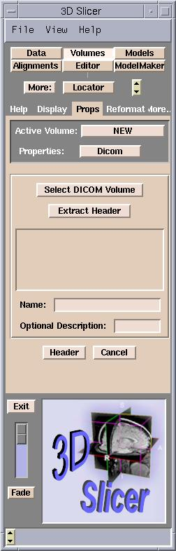
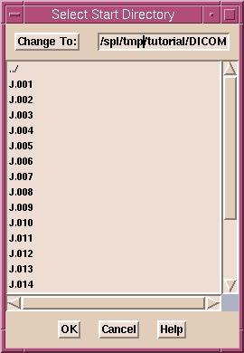
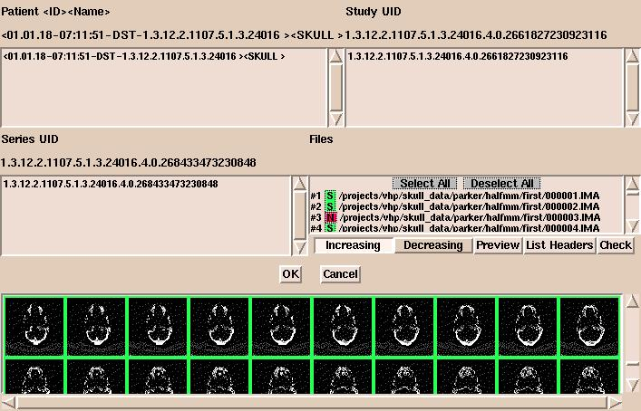

Note: DICOM (digital imaging and communications in medicine) is a complicated standard. Slicer is not capable of reading
all flavors of it.
Slicer assumes that the slices of the volume are stored in separate files,
that they are not compressed, and that the header data is correct (contains
the correct values of the study and the series UIDs).
Slicer uses the following method to determine the correct slice order.
First, it tries to find the Image Number (0x0020,0x0013) data element.
If that is not present, it tries the Slice Location (0x0020,0x1041) data element.
If neither data element is available, the files will be ordered as they were found,
possibly not in the correct order.
Also, Slicer has a restriction that the slice thickness and spacing
must be the same for every slice.
Also, any oblique scans are shown as the nearest
approximate scan order (axial, sagittal, or coronal).
Note Also: Slicer assumes that the subject is scanned supine (face up). Scans of prone subjects (face down) may be flipped.
To load DICOM volumes:
- Click Add Volume in the Data panel.
The Props tab of the Volumes panel will appear.

- From the Properties pull-down menu, select Dicom.
- Click Select DICOM Volume.

- A dialog box appears. Select the directory to start searching
for volumes in, and click OK. The whole directory
structure will be traversed to find every
DICOM file. Important information, such as the name and ID of
the patient, the study UID (unique identifier), and the series UID, will be
extracted from each DICOM file. Note: if you have a large number
of files, this is a slow process.

- After the search, a new dialog box appears showing patient, studies, series, and files.
(By default, all files of the first series of the first
study of the first patient will appear.) Select a patient, a study of this patient, a series of this study, and the
files of this series. Then click OK.
- After clicking OK, the header data of the first
file will be extracted. You may select additional files. Clicking Extract
Header will show their header information. You can check and modify the
extracted values by clicking Header.
- In the Basic panel,
you can use the Image Data buttons to select whether your images are grayscale or label maps
(the output of a segmentation).
- The Name field is the name that your volume will
have within Slicer. You may change this to something descriptive, for
example "Presurgical SPGR".
- You may enter a description in the optional Description
field.
- Click Apply to set your Name and
Description choices.
- Finally, click Apply to read in the volume. Your
data will now appear in the 2D portion of the Viewer window.